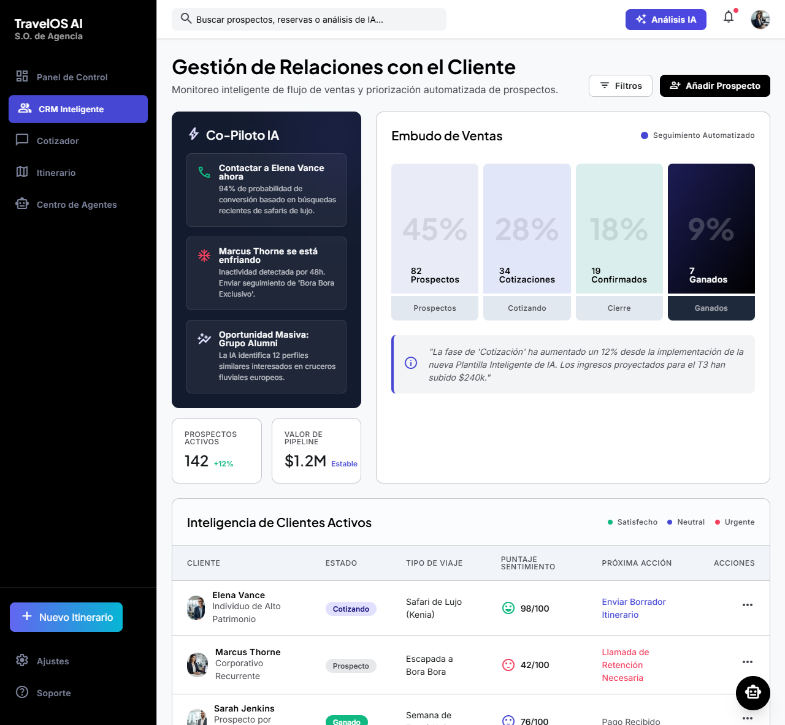
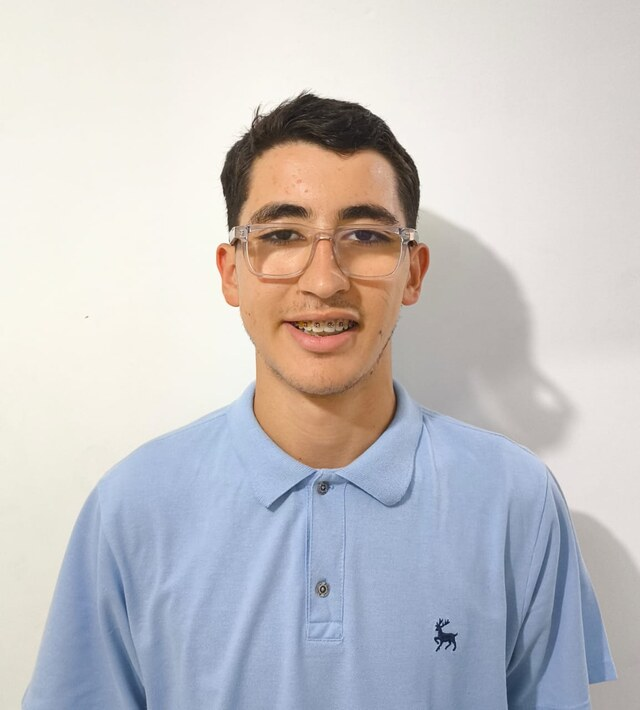
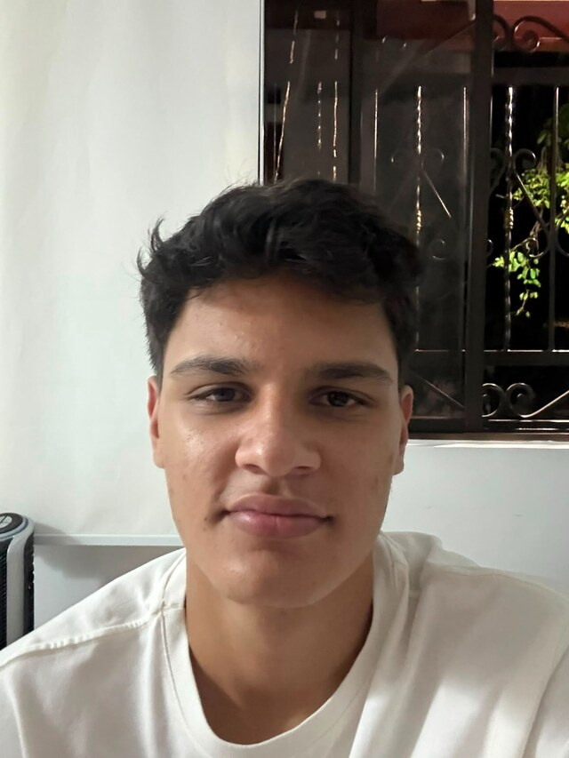
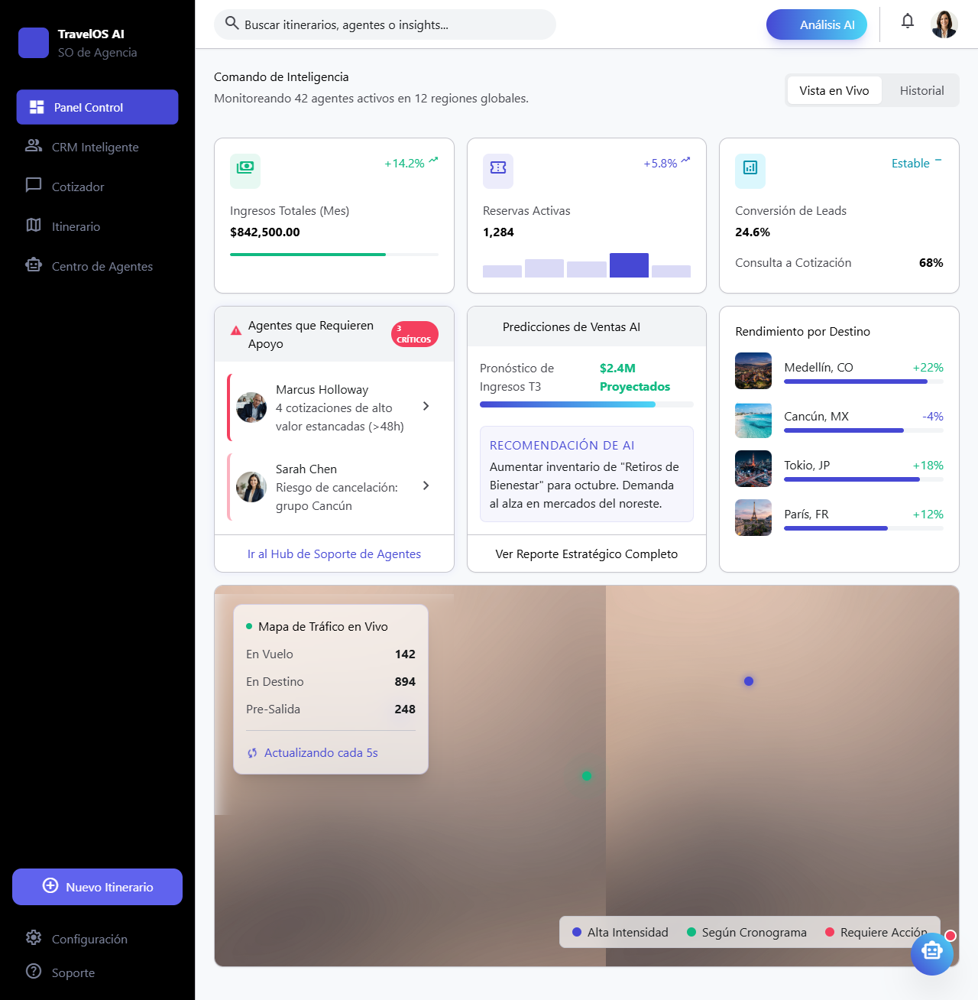
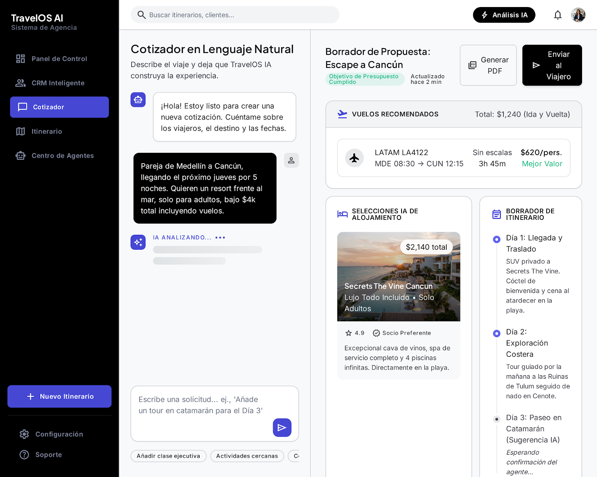
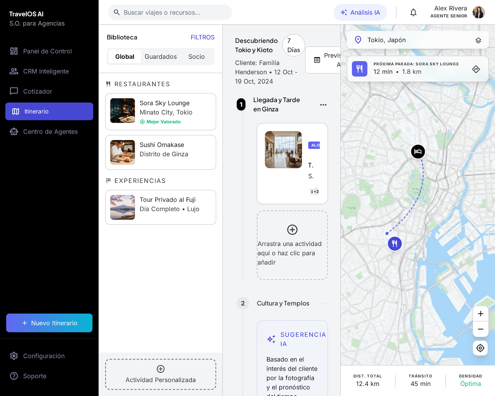

Proyecto Integrador 2 · Sprint 0 · Pitch 5–8 min
Sustentación de definición: problemática, solución, arquitectura, stack, MVP, prototipos y ventaja competitiva. Artefactos de producto aprobados por el PO — Juan Manuel Restrepo Molina (Punto D' Partida).

Jerónimo RestrepoSM + DevSecOps
Santiago ArboledaFrontend01 · Problemática
El viajero cotiza con varias agencias a la vez. Quien responde tarde o cotiza lento, pierde el viaje — aunque tenga mejor producto.
El lead digital se va con el primero que contesta; demoras de horas matan la conversión.
Tarifas, PDFs, itinerarios a mano y vaivén por WhatsApp: horas. Con IA: minutos.
Excel + WhatsApp + correo + Drive + PDFs sueltos. Sin fuente única de verdad.
Leads fríos se pierden por falta de nurturing y recordatorios sistemáticos.
Si el asesor se va, se lleva tono, políticas e historial del cliente.
Documentos, requisitos y links administrativos consumen tiempo vendible.
El gerente no ve conversión, CAC, destinos rentables ni desempeño por asesor.
El viajero espera WhatsApp/app; el email lento ya no es el canal principal.
Nota de pitch: reforzar con 1–2 cifras del sector (tiempo de respuesta / % leads perdidos).
02 · Solución propuesta
TravelOS AI centraliza ventas, operación y servicio con IA integrada — marca blanca y conocimiento propio por agencia.
Centraliza leads/clientes → ataca dispersión y seguimiento.
Opciones de viaje en minutos → ataca cotización lenta.
Prioriza y responde 24/7 → ataca respuesta lenta.
Nurturing de leads fríos → ataca fuga comercial.
Tono, políticas, FAQs → ataca fuga de conocimiento.
Inmediatez al viajero + KPIs reales al gerente.

03 · Arquitectura de la solución
Escala por agencia sin mezclar datos ni conocimiento. Lo pesado (PDF, IA) va a colas para no trabar la UI.
Web asesores/gerente + portal viajero. Base visual del prototipo Vite.
CRM, cotizador, tenancy, auditoría. Lógica de negocio tipada.
Modelo relacional multi-tenant. pgvector para RAG por agencia.
Workers para PDF, IA y emails sin bloquear requests.
Cotización NL y copiloto; knowledge filtrado por agencyId.
Documentos, PDFs de cotización e itinerarios.
Roles: asesor, gerente/admin, viajero.
Monorepo, GitHub Actions, trazas de acciones sensibles.
Por qué así: aislamiento de datos, UI responsive bajo carga, stack moderno y documentado (diferencial vs cajas negras del mercado).
04 · Tecnologías
Next.js 15 · Tailwind CSS · (prototipo Vite HTML reutilizable)
NestJS · Zod (validación compartida)
PostgreSQL · Prisma ORM
Redis · BullMQ
OpenAI (desde Release 2) · RAG por tenant
JWT · RBAC
Object storage (docs / PDFs)
CI · monorepo · health checks · auditoría
Django/Laravel/Firebase evaluados: priorizamos alineación al prototipo React/Tailwind del equipo, consultas relacionales fuertes para CRM/finanzas, y un stack transparente para la rúbrica académica.
05 · Funcionalidades principales (MVP)
SPRINT 1 · ~25% MVP
SPRINT 2 · ~65% MVP
SPRINT 3 · 100% MVP
Backlog ya en GitHub: 24 historias de usuario · 4 épicas, con planning de Sprint 1 detallado.
06 · Prototipos



Prototipo HTML reutilizable como base del frontend real:
index.html · crm.html · cotizador.html · itinerario.html · agentes.html
Mockups y alcance de prototipo aprobados por el PO. Casos de prueba iniciales documentados. FE/UX migran este HTML a Next.js (no rediseño desde cero).
07 · Análisis de competencia
| Competidor | Fortaleza | Debilidad vs TravelOS |
|---|---|---|
| TravelJoy | CRM completo, pagos, copiloto IA | No es SO integral; débil en IA por agencia, portal profundo y foco LATAM/WhatsApp |
| Travefy | Itinerarios visuales, líderes de mercado, comisiones | Agente de ventas IA más débil; sin cotización NL ni knowledge aislado por agencia |
| Chatbots turísticos | Respuesta rápida, WhatsApp nativo | Sin CRM real, docs, métricas ni retención de conocimiento; memoria corta |
El mercado empuja punto-soluciones. Nosotros cerramos el loop completo de la agencia.
08 · Ventaja competitiva
WhatsApp-first + portal + CRM + cotizador en un solo producto.
No un copiloto genérico: políticas, tono y FAQs por agencia (RAG + agencyId).
Logo, dominio, app — diferencial comercial fuerte en LATAM.
Arquitectura moderna y documentada (ventaja académica y de confianza).
Colas para PDF/IA/email: evitamos la latencia típica de “smart import / copiloto” que congela la UI en competidores.
No competimos por ser el chatbot más rápido ni el CRM más bonito — competimos por ser el sistema operativo completo que hoy ninguna agencia LATAM tiene.
09 · Cierre del Sprint 0
Repo y Wiki: github.com/Jeronimo0228/travel-OS · Demo mockups: 127.0.0.1:5173